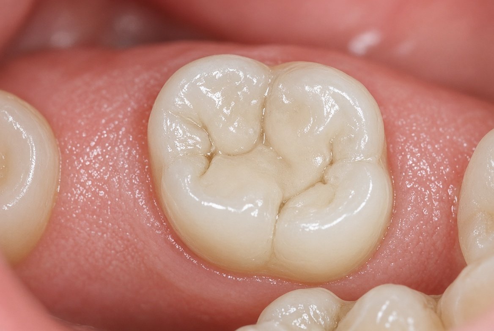

Restaurações

Procedimento realizado com planejamento individualizado, priorizando a preservação dental, a função e a naturalidade do resultado.
Antes de qualquer intervenção, realizamos uma avaliação completa e conversamos sobre as expectativas e a realidade do paciente. O tratamento é explicado com clareza, incluindo etapas, cuidados e o que esperar do resultado.
Cada caso é único. Consideramos a condição atual, a saúde geral e o estilo de vida para indicar a melhor abordagem.